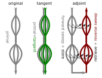
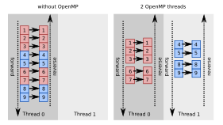
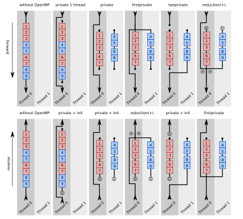

Enable Automatic Differentiation of OpenMP Programs with Clad


Jiayang Li
Mentors: Vassil Vassilev, Martin Vassilev
Background

What is Automatic Differentiation (AD)?
Exact derivatives by transforming programs; no finite-difference error; supports forward and reverse.
What is OpenMP?
Pragmas for shared-memory parallelism (parallel, for, reduction, etc.).
What is Clad?
Source-transformation AD library for C++ implemented as a plugin for Clang
Case Study
Start with a representative example: compute the gradient of a simple parallel loop.
Case Study
What might the reverse-mode gradient look like conceptually?
void parallel_sum_of_squares_grad(const double *x, int n, double *_d_x, int *_d_n) {
double _d_total = 0.;
double total = 0.;
#pragma omp parallel for reduction(+: total)
for (int i = 0; i < n; i++) {
total += x[i] * x[i];
}
_d_total += 1;
#pragma omp parallel private(total) firstprivate(_d_total)
for (int i = n - 1; i >= 0; i -= 1) {
double _r_d0 = _d_total;
_d_x[i] += _r_d0 * x[i];
_d_x[i] += x[i] * _r_d0;
}
}Technical Challenges
- Clang AST specifics for OpenMP (building AST nodes, capture variables, clause handling)
- Variable scoping across OpenMP regions and clauses
- Thread-safe storage for tapes/intermediates
- Deterministic schedule reversal for the reverse pass
Implementation Overview
The theory is based on the paper from Tapenade, which provides detailed proofs and demonstrates the implementation of OpenMP automatic differentiation on the Fortran platform using Tapenade.
Since OpenMP constructs are transformed into AST nodes during the Clang AST phase, we can override the corresponding OpenMP-related AST nodes Visit methods—just as we do with other Visit methods—to build new function ASTs.
Forward Mode (#1491)
Since the execution order of the forward-mode derivatives is consistent with that of the original code, the scopes of the differentiated variables can be directly inherited from the original variables, and the parallel structure of the entire program can also be reused.
For the previous example, the actually generated code looks like this:
// auto d_fn_arr = clad::differentiate(parallel_sum_of_squares, "x[1]");
// d_fn_arr.dump();
double parallel_sum_of_squares_darg0_1(const double *x, int n) {
int _d_n = 0;
double _d_total = 0.;
double total = 0.;
#pragma omp parallel for reduction(+: _d_total,total)
for (int i = 0; i < n; i++) {
_d_total += (i == 1) * x[i] + x[i] * (i == 1);
total += x[i] * x[i];
}
return _d_total;
}Reverse Mode — Clang AST
- The previous VisitForStmt method was too invasive for
omp for; we implement a dedicatedDifferentiateCanonicalLoopfor OpenMP loops.
// auto fn_grad = clad::gradient(sum_of_squares);
// fn_grad.dump();
void sum_of_squares_grad(const double *x, int n, double *_d_x, int *_d_n) {
int _d_i = 0;
int i = 0;
double _d_total = 0.;
double total = 0.;
unsigned long _t0 = 0;
for (i = 0; i < n; i++) {
_t0++;
total += x[i] * x[i];
}
_d_total += 1;
for (; _t0; _t0--) {
i--;
{
double _r_d0 = _d_total;
_d_x[i] += _r_d0 * x[i];
_d_x[i] += x[i] * _r_d0;
}
}
}Reverse Mode — Clang AST
It should be noted that, for Clang’s OpenMP implementation, we need to capture the related variables when building
DeclRefExpr(which corresponds to theCaptureStmt’s subnodes in the Clang AST).So we also need visit twice to generate two OpenMP regions and their capture lists: one for the forward pass, one for the reverse pass.
CLAD_COMPAT_CLANG19_SemaOpenMP(m_Sema).ActOnOpenMPRegionStart(OMPD_parallel, nullptr);
StmtDiff BodyDiff;
{
Sema::CompoundScopeRAII CompoundScope(m_Sema);
if (isOpenMPLoopDirective(D->getDirectiveKind())) {
const auto* FS = cast<ForStmt>(CS);
BodyDiff = DifferentiateCanonicalLoop(FS);
} else {
BodyDiff = Visit(CS);
}
}
Stmt* Forward = CLAD_COMPAT_CLANG19_SemaOpenMP(m_Sema)
.ActOnOpenMPRegionEnd(BodyDiff.getStmt(), OrigClauses)
.get();
CLAD_COMPAT_CLANG19_SemaOpenMP(m_Sema).ActOnOpenMPRegionStart(OMPD_parallel, nullptr);
// Visit twice, but use only the result of the first visit, for capture variables only.
{
Sema::CompoundScopeRAII CompoundScope(m_Sema);
Stmts temp;
m_Globals.swap(temp);
if (isOpenMPLoopDirective(D->getDirectiveKind())) {
const auto* FS = cast<ForStmt>(CS);
DifferentiateCanonicalLoop(FS);
} else {
Visit(CS);
}
m_Globals.swap(temp);
}
Stmt* Reverse =
CLAD_COMPAT_CLANG19_SemaOpenMP(m_Sema)
.ActOnOpenMPRegionEnd(BodyDiff.getStmt_dx(), DiffClauses)
.get();Reverse Mode — Scope conversion
Reverse Mode — Intermediates and schedule replay
- Intermediates require tapes; the tape itself must become private to each thread; so we make these threadprivate.
- For data consistency, we must ensure that the parallel scheduling of the backward pass strictly reproduces the thread–task allocation of the forward pass. To achieve this, we reverse the schedule while preserving chunk boundaries by a small runtime helper:
- Forward pass: each thread computes its static chunk from thread ID and executes normally.
- Reverse pass: the same helper returns identical chunks, then we iterate the chunk in reverse order.
Reverse Mode (#1641)
The resulting generated code:
// auto fn_grad = clad::gradient(parallel_sum_of_squares);
// fn_grad.dump();
void parallel_sum_of_squares_grad(const double *x, int n, double *_d_x, int *_d_n) {
double _d_total = 0.;
double total = 0.;
#pragma omp parallel reduction(+: total)
{
int _t_chunklo0 = 0;
int _t_chunkhi0 = 0;
clad::GetStaticSchedule(0, n - 1, 1, &_t_chunklo0, &_t_chunkhi0);
for (int i = _t_chunklo0; i <= _t_chunkhi0; i += 1) {
total += x[i] * x[i];
}
}
_d_total += 1;
#pragma omp parallel private(total) firstprivate(_d_total)
{
int _t_chunklo1 = 0;
int _t_chunkhi1 = 0;
clad::GetStaticSchedule(0, n - 1, 1, &_t_chunklo1, &_t_chunkhi1);
for (int i = _t_chunkhi1; i >= _t_chunklo1; i -= 1) {
{
double _r_d0 = _d_total;
_d_x[i] += _r_d0 * x[i];
_d_x[i] += x[i] * _r_d0;
}
}
}
}Future Work
Support dynamic schedules (record executed chunks at runtime and replay).
Support more OpenMP clauses and directives (atomic, simd, etc.).
We can even try to enable OpenMP offloading to target accelerators (e.g., GPUs).
Thank You!
Q & A